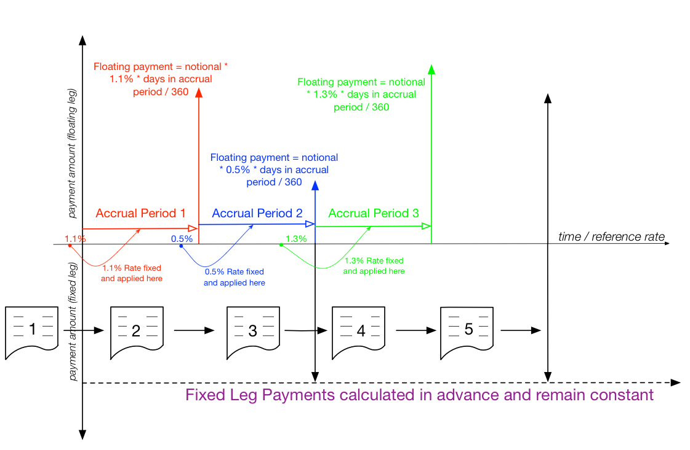

Interest rate swaps¶
The Interest Rate Swap (IRS) Contract (source: IRS.kt, IRSUtils.kt, IRSExport.kt) is a bilateral contract to implement a vanilla fixed / floating same currency IRS.
In general, an IRS allows two counterparties to modify their exposure from changes in the underlying interest rate. They are often used as a hedging instrument, convert a fixed rate loan to a floating rate loan, vice versa etc.
The IRS contract exists over a period of time (normally measurable in years). It starts on its value date (although this is not the agreement date), and is considered to be no longer active after its maturity date. During that time, there is an exchange of cash flows which are calculated by looking at the economics of each leg. These are based upon an amount that is not actually exchanged but notionally used for the calculation (and is hence known as the notional amount), and a rate that is either fixed at the creation of the swap (for the fixed leg), or based upon a reference rate that is retrieved during the swap (for the floating leg). An example reference rate might be something such as ‘LIBOR 3M’.
The fixed leg has its rate computed and set in advance, whereas the floating leg has a fixing process whereas the rate for the next period is fixed with relation to a reference rate. Then, a calculation is performed such that the interest due over that period multiplied by the notional is paid (normally at the end of the period). If these two legs have the same payment date, then these flows can be offset against each other (in reality there are normally a number of these swaps that are live between two counterparties, so that further netting is performed at counterparty level).
The fixed leg and floating leg do not have to have the same period frequency. In fact, conventional swaps do not have the same period.
Currently, there is no notion of an actual payment or obligation being performed in the contract code we have written; it merely represents that the payment needs to be made.
Consider the diagram below; the x-axis represents time and the y-axis the size of the leg payments (not to scale), from the view of the floating leg receiver / fixed leg payer. The enumerated documents represent the versions of the IRS as it progresses (note that, the first version exists before the value date), the dots on the “y=0” represent an interest rate value becoming available and then the curved arrow indicates to which period the fixing applies.
Two days (by convention, although this can be modified) before the value date (i.e. at the start of the swap) in the red period, the reference rate is observed from an oracle and fixed - in this instance, at 1.1%. At the end of the accrual period, there is an obligation from the floating leg payer of 1.1% * notional amount * days in the accrual period / 360. (Also note that the result of “days in the accrual period / 360” is also known as the day count factor, although other conventions are allowed and will be supported). This amount is then paid at a determined time at the end of the accrual period.
Again, two working days before the blue period, the rate is fixed (this time at 0.5% - however in reality, the rates would not be so significantly different), and the same calculation is performed to evaluate the payment that will be due at the end of this period.
This process continues until the swap reaches maturity and the final payments are calculated.
Creating an instance and lifecycle¶
There are two valid operations on an IRS. The first is to generate via the Agree command (signed by both parties)
and the second (and repeated operation) is Fix to apply a rate fixing.
To see the minimum dataset required for the creation of an IRS, refer to IRSTests.kt which has two examples in the
function IRSTests.createDummyIRS(). Implicitly, when the agree function is called, the floating leg and fixed
leg payment schedules are created (more details below) and can be queried.
Once an IRS has been agreed, then the only valid operation is to apply a fixing on one of the entries in the
Calculation.floatingLegPaymentSchedule map. Fixes do not have to be applied in order (although it does make most
sense to do them so).
Examples of applying fixings to rates can been seen in IRSTests.generateIRSandFixSome() which loops through the next
fixing date of an IRS that is created with the above example function and then applies a fixing of 0.052% to each floating
event.
Currently, there are no matured, termination or dispute operations.
Technical details¶
The contract itself comprises of 4 data state classes, FixedLeg, FloatingLeg, Common and Calculation.
Recall that the platform model is strictly immutable. To further that, between states, the only class that is modified
is the Calculation class.
The Common data class contains all data that is general to the entire swap, e.g. data like trade identifier,
valuation date, etc.
The Fixed and Floating leg classes derive from a common base class CommonLeg. This is due to the simple reason that
they share a lot of common fields.
The CommonLeg class contains the notional amount, a payment frequency, the effective date (as well as an adjustment
option), a termination date (and optional adjustment), the day count basis for day factor calculation, the payment delay
and calendar for the payment as well as the accrual adjustment options.
The FixedLeg contains all the details for the CommonLeg as well as payer details, the rate the leg is fixed at
and the date roll convention (i.e. what to do if the calculated date lands on a bank holiday or weekend).
The FloatingLeg contains all the details for the CommonLeg and payer details, roll convention, the fixing roll
convention, which day of the month the reset is calculated, the frequency period of the fixing, the fixing calendar and
the details for the reference index (source and tenor).
The Calculation class contains an expression (that can be evaluated via the ledger using variables provided and also
any members of the contract) and two schedules - a floatingLegPaymentSchedule and a fixedLegPaymentSchedule.
The fixed leg schedule is obviously pre-ordained, however, during the lifetime of the swap, the floating leg schedule is
regenerated upon each fixing being presented.
For this reason, there are two helper functions on the floating leg. Calculation.getFixing returns the date of the
earliest unset fixing, and Calculation.applyFixing returns a new Calculation object with the revised fixing in place.
Note that both schedules are, for consistency, indexed by payment dates, but the fixing is (due to the convention of
taking place two days previously) not going to be on that date.
Note
Payment events in the floatingLegPaymentSchedule that start as a FloatingRatePaymentEvent (which is a
representation of a payment for a rate that has not yet been finalised) are replaced in their entirety with an
equivalent FixedRatePaymentEvent (which is the same type that is on the FixedLeg).